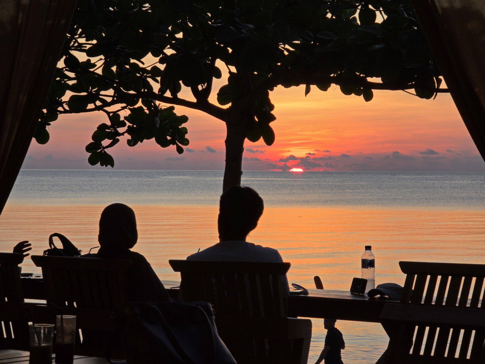
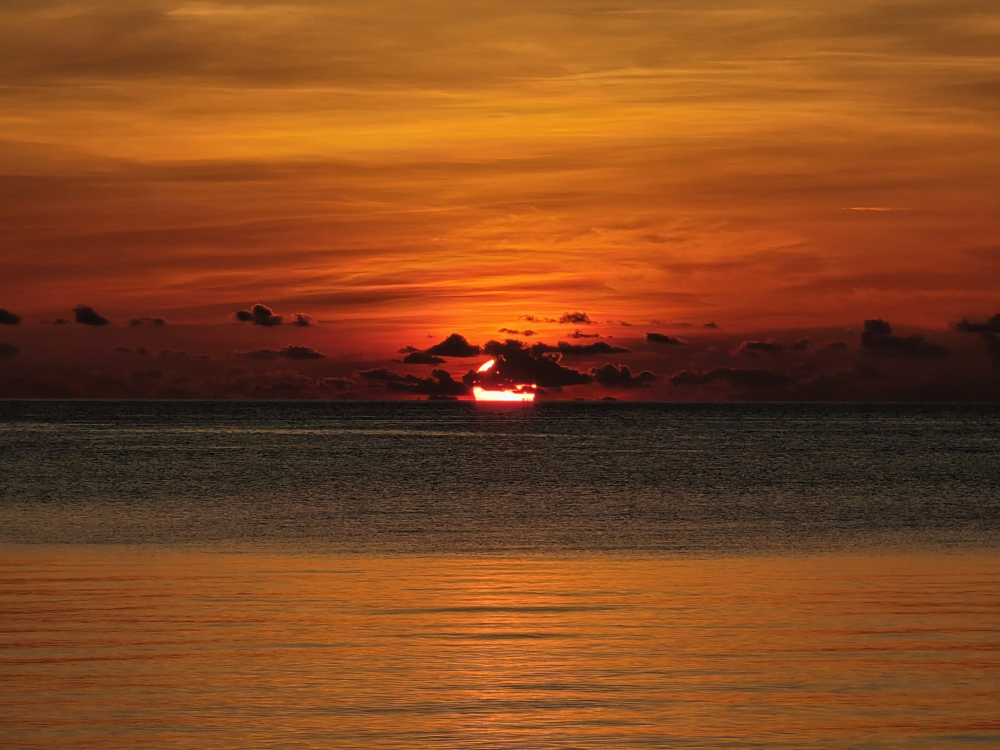
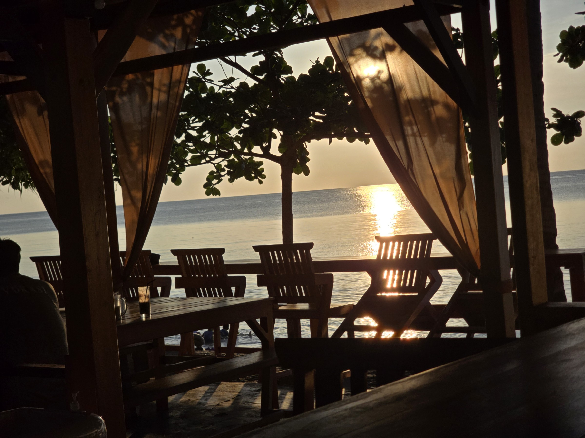
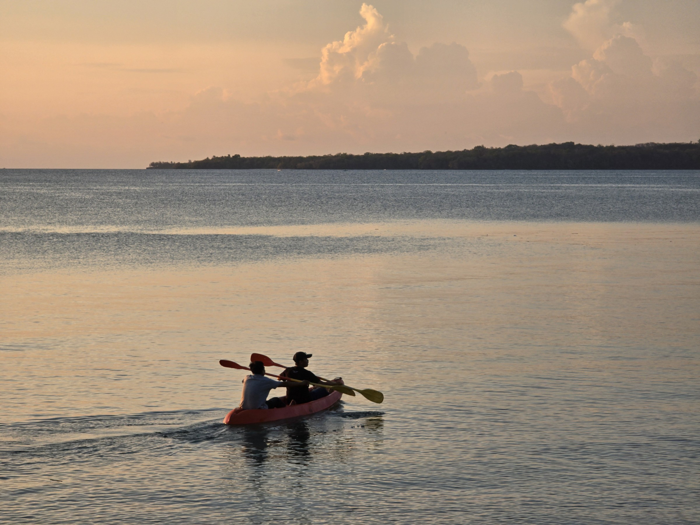
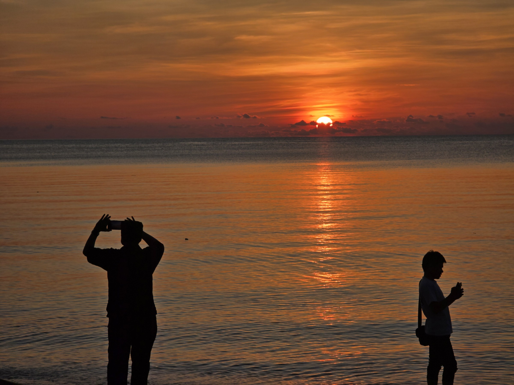
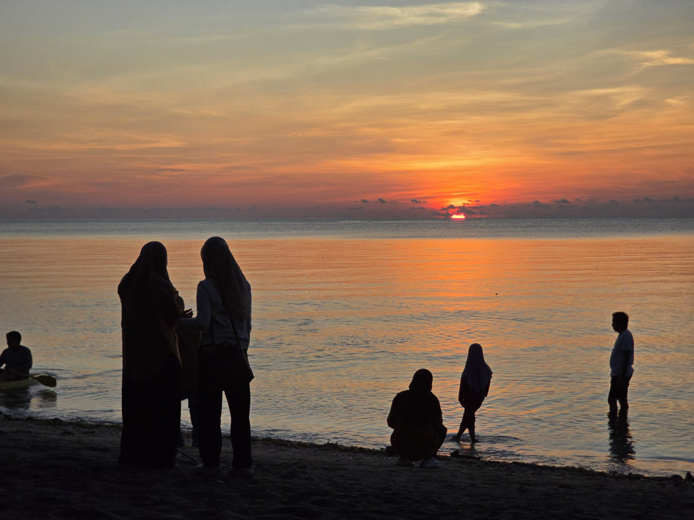
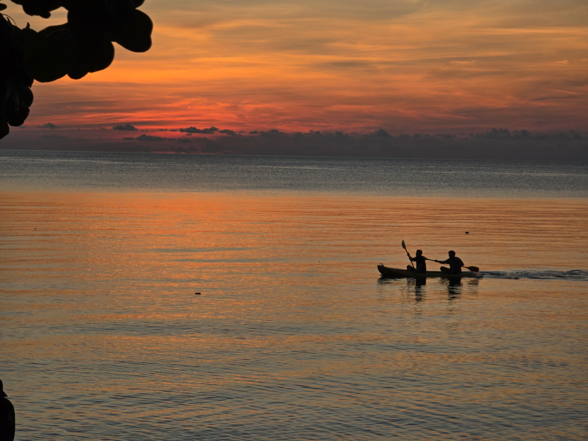

Sunset moment · Pantai Sunari
Senja di Selayar begini rasanya.
Geser pelan-pelan →


Matahari terbenam
Matahari menyentuh laut
Langit berubah jingga pekat, laut ikut diam sejenak.
SunaRi · Selayar#sunarisunsetmoment02 / 08

Kita mulai dari awal sore
Sore mulai dari cahaya
Tirai jingga, kursi kayu, dan pantulan matahari di laut.
SunaRi · Selayar#sunarisunsetmoment03 / 08

Golden hour
Kayak meluncur pelan
Laut tenang, awan merona merah muda di atas pulau seberang.
SunaRi · Selayar#sunarisunsetmoment04 / 08

Menjelang senja
Semua ingin mengabadikan
Ponsel terangkat, jalur cahaya jatuh tepat di depan.
SunaRi · Selayar#sunarisunsetmoment05 / 08

Menjelang senja
Berdiri di tepi air
Mengobrol, bermain air, menunggu matahari turun bersama.
SunaRi · Selayar#sunarisunsetmoment06 / 08

Afterglow
Langit belum selesai
Matahari sudah turun, jingga dan merah masih menemani kayak terakhir.
SunaRi · Selayar#sunarisunsetmoment07 / 08

Senja ini menunggumu
Simpan untuk liburanmu
Tag orang yang ingin kamu ajak
menikmati sore seperti ini.
Biar kami bantu
WhatsApp 0821-8903-3044
Pantai Sunari · Selayar
#sunarisunsetmoment